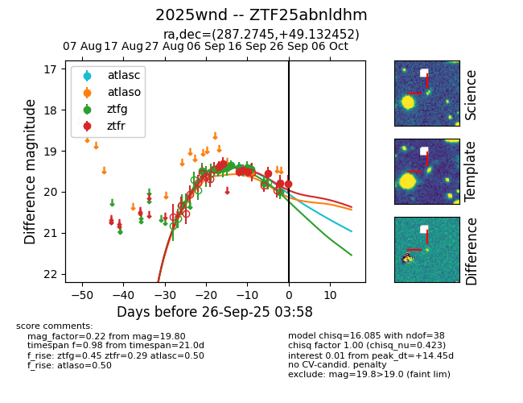
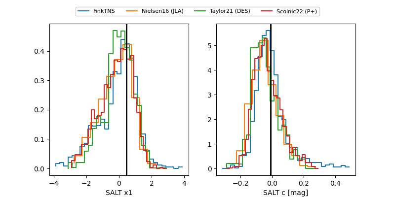

FINK: ZTF25abnldhm
Lasair: ZTF25abnldhm
ALeRCE: ZTF25abnldhm
TNS: 2025wnd
YSE: 2025wnd
ZTF25abnldhm (ztf,fink)
2025wnd (tns,yse)
equatorial (ra, dec) = (287.2745,+49.13245)
galactic (l, b) = (79.7851,+17.45746)


last atlasc=19.41, atlaso=19.52, ztfg=19.99, ztfr=19.80
1 atlasc, 1 atlaso, 12 ztfg, 8 ztfr detections